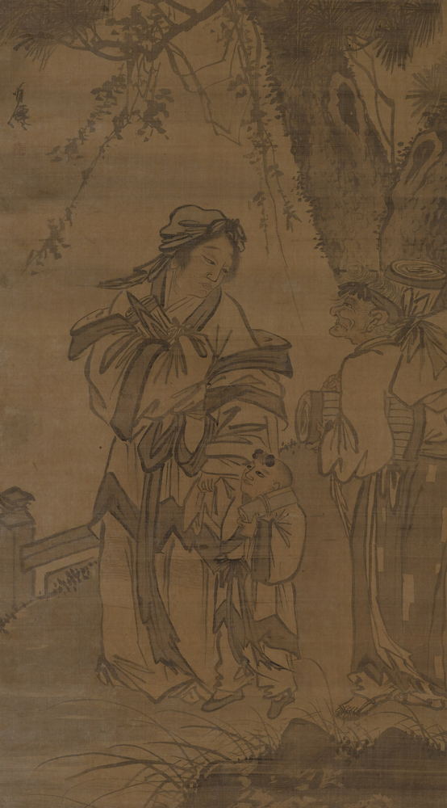
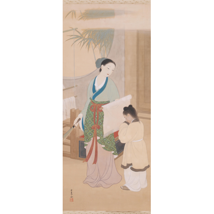
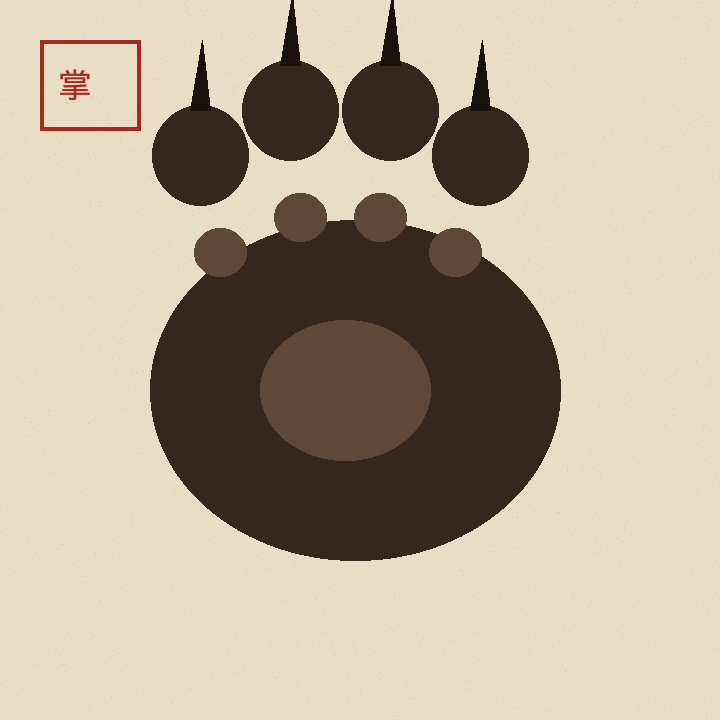
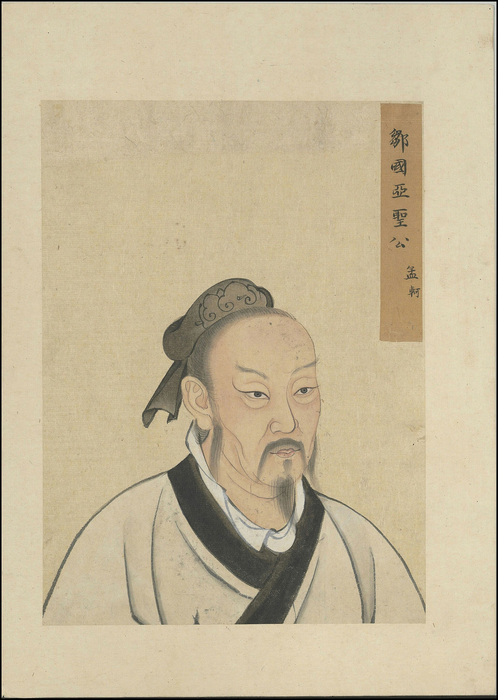

3G 第5組 · 頁11–12、14 · 用 reveal.js
孟子思想
用校園講明白
仁愛謙和 · 三反其身 · 舍生取義 · 以德服人 · 天賦尊嚴
古典畫像（唔用人臉相）
滑動手勢／空白鍵
撳「全螢幕」
引擎：reveal.js（開源 HTML 簡報框架，專為觸控／投影設計）

孟子（孟軻）· 古典半身畫像 · 公開領域
開場互動 · 全班舉手
如果你是班長，你揀邊種？

以力服人
恐嚇／罰分 → 暫時屈服
VS

以德服人
公道／帶頭 → 心悅誠服
孟子：君子應該以德服人，不是只靠外力強迫。
仁愛謙和 · 三種校園做法
一個精神，三種做法

① 仁愛
分享筆記——心存仁愛，不是換名氣。
筆記：為君為臣為民都應有的思想基礎

② 恭敬謙讓
對師長同學有禮 → 得信任、少衝突。
社會互相尊重，矛盾自然消解

③ 和為貴
輸完仍一隊——和平安定靠仁愛之心。
沒有愛人的心 → 難達和平安定
舍生取義 ·《孟子·告子上》
魚 VS 熊掌

魚 ≈ 生命／舒服
想避麻煩、少得罪人
VS

熊掌 ≈ 義
誠信、公義、做人底線
「二者不可得兼，舍生而取義。」
校園版取義
兩個場面，你會點揀？
考試：好友要你傳答案
幫＝人情；拒絕＝得罪人？
取義：拒絕作弊，改為幫温習＝守誠信
操場：見到有人被欺負
裝看不見較安全？
取義：通報老師／陪伴求助＝義 > 怕事
不是叫人亂送命，而是價值排序：義禮 > 只顧舒服
以德服人
王者路 vs 霸者路

德 · 王者
出於仁愛真心 → 心悅誠服
PK
力 · 霸者
假借仁義／武力 → 暫時屈服
匯報金句：心服才長久，力屈只一時。
人格論 · 頁14
天賦尊嚴
- 憐憫之心 → 知善惡
- 羞恥之心 → 知該做／不該做
- → 仁義之心 → 尊嚴人格
成人之美
言行一致
不走歪路
君子要堂堂正正做人：這是天賦尊嚴。

古典畫意象 · 唔用真人臉相
代表著作
《孟子》速記
7
篇（各分上下）
261
章左右
語錄
記錄言行
上台必講
- 舍生取義出自《孟子·告子上》
- 德服／力服：心悅誠服 vs 暫時屈服
- 三反其身：仁／智／敬
- 憐憫＋羞恥 → 尊嚴
孟母教子典故古典畫
Game time
轉盤抽人問答
1–30 真隨機 → 問題＋提示 → 揭曉答案／近似 → 5 秒返回
提示：簡報用空白鍵／左右掃；全螢幕撳右上角或鍵盤 F；總覽撳 Esc。
簡報框架：reveal.js (MIT) · 圖像：古典畫像／畫風素材 · 唔用 emoji、唔用人臉照片